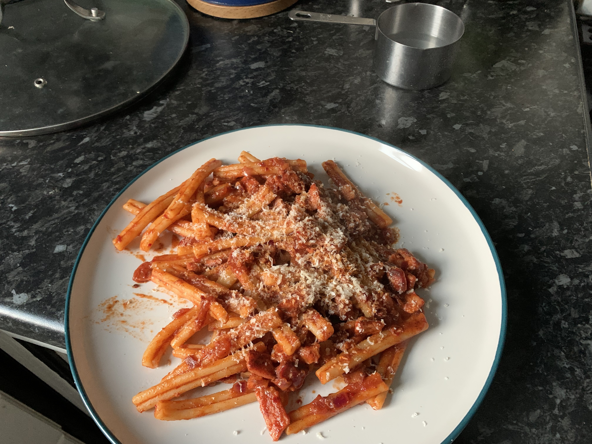

Salsiccia

Sausage Pasta
Simple ingredients, explosive taste!
Ingredients
- 3 Good Quality Italian Sausages
- Half a tin of plum tomatoes
- 120g of rigatoni or caserecce pasta
- 1 Tablespoon of dried fennel
- 1 Tablespoon of chilli flakes
- 2 Crushed then chopped cloves of garlic
- Splash of white wine
- Grated parmesan or pecorino romano cheese
- Salt and pepper
Method
- Peel the skin from the sausages then fry them in a pan on medium heat, breaking them up as you go.
- Once they start to brown up, remove them from the pan.
- Turn the heat down then add salt, fennel, chilli flakes and garlic.
- Fry this off for a minute or so.
- Add your pasta to a pan of boiling water and cook til al dente.
- Add the white wine and use it to deglaze the pan.
- Re-add the sausage meat.
- Add the tinned tomatoes and turn the heat up.
- When the pasta has been cooking for about 6 minutes add a ladeful of pasta water to the sausage and tomato pan.
- Add some salt to the sauce.
- When the pasta is done, drain then add to the sauce pan. Use some pasta water if it needs loosening up.
- Mix then serve with a twist of black pepper and a large grating of parmesan or pecorino cheese.
Home